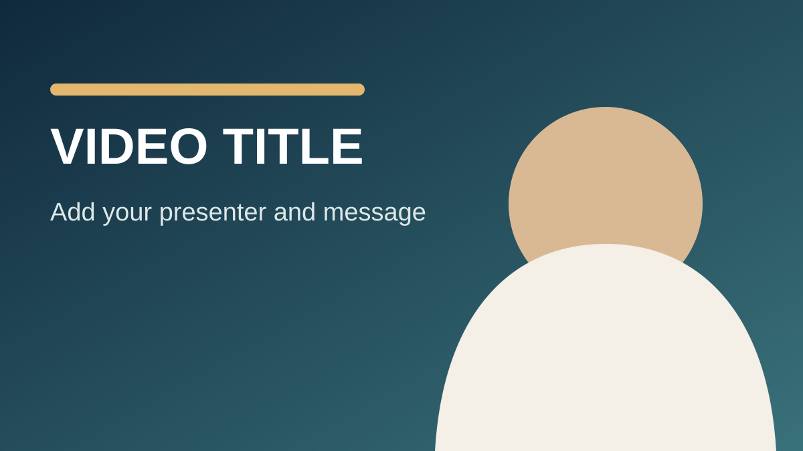

01文案准备
文案仿写
1. 文案生成
自动保存到本机0 字 · 约 0 秒
2. 文案改写
02标题与话题
标题和话题生成
03声音与数字人
选择声音
选择数字人形象
上传自己的模板视频上传后进入本机模板库，可长期复用
04字幕与剪辑
1. 字幕生成
待生成2. 字幕模板
字幕样式预览
3. 背景音乐
背景音量
人声音量
4. 输出参数
输入文案后，这里会同步显示口播字幕预览。
语音等待
口型等待
合成等待
05文字封面

查看完整图片06审核与发布
角色资产
数字人
选择出镜形象，或为现有角色更换名称和封面。
0 个角色
声音资产
声音
管理合成声音与克隆声音，每个声音都可以设置独立人物形象。
0 个声音
克隆新声音
本机处理剪辑素材
辅助画面
在口播的指定时间段叠加产品图、演示视频或说明画面。
什么时候使用？当文案讲到产品、步骤或数据时，把对应图片或视频叠加在主画面上，观众会更容易理解。
生成记录
任务
查看语音、口型、字幕与成片合成的实时状态。
每 2 秒自动刷新
本机配置
设置
配置文案模型、本地生成引擎和剪辑参数。
模型服务
用于提取、改写文案以及生成标题和话题。
声音引擎
声音模型
音频服务检测中
数字人引擎
生成方式
视频服务检测中
生成性能
视频剪辑
剪辑模式选择
普通剪辑仅占用 CPU 资源。